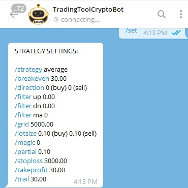

SEMI-AUTOMATED DAX ALGORITHM
MT4 SADA Robot Exclusively for DAX

Verified Track Record
METATRADER 4
The SADA Robot is the only MetaTrader 4 product that TradingToolCrypto offers because there is one thing that MT4 does so well, we haven't needed MT5. SADA stands for Semi-Automated DAX Algorithm and it's a High Frequency intraday trading system optimized for the GE30.Cash DAX Indices instrument. We only run this algorithm on one particular brokerage (RoboForex) since they offer an exclusive commission discounts and fixed 0.50 USD spreads which can't be beat by any other Forex Brokerage. With these special trading conditions, we had in mind High Frequency Trading that could extract profits through out the trading hours of the German Stock Exchange session.
SADA is packed with four different trading strategies with a complete User Interface to adjust all the parameters. We went the extra mile to integrate telegram messenger app to allow adjustments on the fly. This is the perfect solution for anyone on the go. The Telegram extension to the SADA Robot is actually more powerful than the built-in user interface by extensioning more functionality, commands, and market updates with recommended settings on a daily basis.
Strategy
- Dollar Cost Averaging (AVE)
- Scalping (SCALP)
- Position Building (FOMO)
- Hedging (HEDGE)
SADA Robot is packed with different strategies to avoid the pitfalls that automated trading systems face. Since the markets are constantly evolving, the strategies we select for the current environment shouldn't be based on a historical backtest with optimized settings. The parameters within the strategies can be easily adjusted through the user-interface or telegram to prevent over-fitting optimization.
Features
- Four Strategies
- Renko Charting
- User Interface - Adjust parameters easily and instantly
- Telegram Integration - Parameter Controls, Monitoring, and Charting
When you are looking for a robot to trade with your own money, you want full control over what the robot is doing. It shouldn't be a blackbox where you don't understand the logic or the input parameters. The SADA robot is quite the opposite in that natural by giving the user full control over everything that the robot does. You can adjust the robot at anytime and the robot obeys. No Artificial intelligence or buzz words here. The SADA Robot is straight forward and easy to use on day one.
Powerful features at your fingertips
 Once you select your strategy, you need to decide if you want to be buying, selling, or both. The advantages of being directional or one sided is that you can follow the market when it is trending or when you are expecting a breakout. By trading in both directions, you can take advantage of the sideways movements while the market establishes its directional sentiment. With the averaging strategy, you can also trade both sides during an inside daily bar while the market consolidates. The robot also notifies you each day with what strategies and settings that should be used to help you out. SADA Robot is not just a powerful trading tool, but a number crunching beast.
Once you select your strategy, you need to decide if you want to be buying, selling, or both. The advantages of being directional or one sided is that you can follow the market when it is trending or when you are expecting a breakout. By trading in both directions, you can take advantage of the sideways movements while the market establishes its directional sentiment. With the averaging strategy, you can also trade both sides during an inside daily bar while the market consolidates. The robot also notifies you each day with what strategies and settings that should be used to help you out. SADA Robot is not just a powerful trading tool, but a number crunching beast.
The market open and close are normally volative but lack directional move. Once the volatility slows down, an intraday trend can be established
 Renko Charts are a great way to filter out the noise , low volatility, and the side ways market chop that can trigger your emotions, indicators, and patience. Since renko charts can filter out negligible price movements, spotting a trending market becomes more natural than traditional charts. Renko charts also have a technical advantage that can be explioted during volatility with higher precision than any other chart. SADA Robot takes advantage of everything that a renko chart can offer with scalping precision, smart position building, and special order management handling while using renko price action patterns with our exclusive SADA.
Renko Charts are a great way to filter out the noise , low volatility, and the side ways market chop that can trigger your emotions, indicators, and patience. Since renko charts can filter out negligible price movements, spotting a trending market becomes more natural than traditional charts. Renko charts also have a technical advantage that can be explioted during volatility with higher precision than any other chart. SADA Robot takes advantage of everything that a renko chart can offer with scalping precision, smart position building, and special order management handling while using renko price action patterns with our exclusive SADA.
Brick Size 10 for Intraday Buy and Sell Scalping and Brick Size 100 with directional Position Building
One of the disadvantages with MetaTrader while using robots are the input parameters settings. Metatrader robots normally require to be re-initized every time you need to make a small adjustment and it also takes several clicks of the mouse to change any input settings. Well, not any more with our built-in User Interface. Now, you can change any input parameter easily and instantly while keeping the robot running at full speed ahead. All input parameters can also be adjusted through the infamous telegram messenger app. When changing the strategies, the robot will load the default settings within the expert advisors input parameters while any adjustments made through telegram or the user-interface will overside the default settings.
Switch strategies, change input parameters, and run commands instantly with a click of a button
Telegram messenger app has been a major game changer for our everyday lives. Not only is it one of the simpliest and cleanest UI for a messaging app, it has a ton of goodies for developers such as the telegram bots. Telegram bots is an easy way to communicate with software in a private two way communication channel. Secured over HTTPS and your access token, you can rest assure your data is confidential and only for your eyes. The telegram integration with the SADA robot takes trading to the next level by giving you full control over the robot remotely. For starters, all features located on the chart user interface are available through telegram. Telegram integration also comes with some advanced features only available within the messenger app.
Control everything on the go
BUY NOW LIMITED SUPPLY
Liquidity is finite in any financial product and to ensure smooth operations for all clients, we're limiting the total number of units sold to only 10 Licenses. To give you 100% transparency of these limited 10 licenses, we're using blockchain aka crypto currency as the only means of payment. All payments will be sent to the same address, therefore you can check the total number of licenses available at any time. If you see 10 transactions within the crypto address, please do not make a payment as we'll have to send the funds back minus networks fees.
10 Copies Available
FAQ
| Broker | Highly recommended RobotForex ECN MT4 Accounts only or equivalent in commission and spreads. |
| Free Updates | All updates will be free of charge. |
| License | Locked to your Live Account. One Account Number per License. No account number changing is possible. |
| MoneyBack | All sales are final with no trials. For serious money hungry traders and investors only. |
| Other Markets | You can trade on any market and any brokerage, but we're only providing support for DAX at RoboForex ECN accounts |
| Support | Telegram is the best way to contact us 24/7 and get an immediate response. We provide excellent support. |
| *If you are unsure about our products please join our investment programs until you are ready to purchase. |